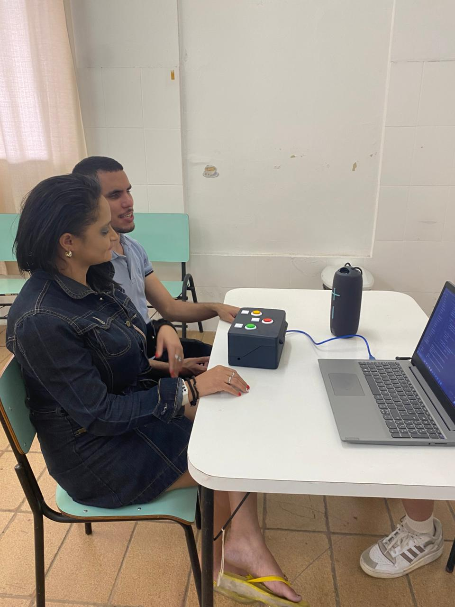

Descrição
O Brainpop! Pop and Learning é um jogo educativo inovador desenvolvido especialmente para crianças com deficiência visual, com o objetivo de proporcionar uma experiência de aprendizado inclusiva, divertida e estimulante. Combinando educação e entretenimento, o projeto busca promover o desenvolvimento cognitivo e a memorização por meio de atividades interativas adaptadas às necessidades desse público.
Estrutura do Jogo
O Brainpop! é organizado em 3 categorias principais, cada uma abrangendo 3 matérias distintas, cuidadosamente selecionadas para atender ao currículo educacional e estimular o aprendizado de forma acessível. As matérias são apresentadas de maneira envolvente, com conteúdos adaptados para garantir a compreensão e o engajamento das crianças com deficiência visual.
Objetivo
O Brainpop! tem como missão oferecer uma ferramenta educacional que seja acessível, inclusiva e eficaz, ajudando crianças com deficiência visual a aprender de forma autônoma e divertida. Ao integrar sequências que desafiam a memória e conteúdos educacionais estruturados, o jogo cria uma experiência única que combina aprendizado com diversão, incentivando o desenvolvimento intelectual e a confiança das crianças.
Impacto
Com uma abordagem centrada na acessibilidade, o Brainpop! Pop and Learning é mais do que um jogo: é uma ponte para a inclusão educacional, permitindo que crianças com deficiência visual explorem o conhecimento de maneira independente e se engajem em um processo de aprendizado significativo.
Equipe Brainpop!

Protótipo Brainpop!
Teste com os deficientes visuais
Para saber mais
https://youtube.com/@brainpoppopandlearn?si=kx9virnxFJmJisng